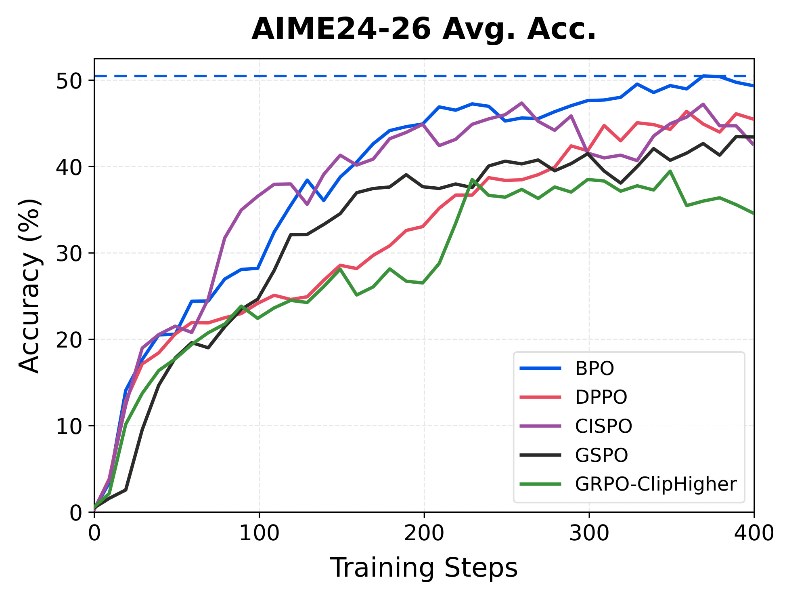
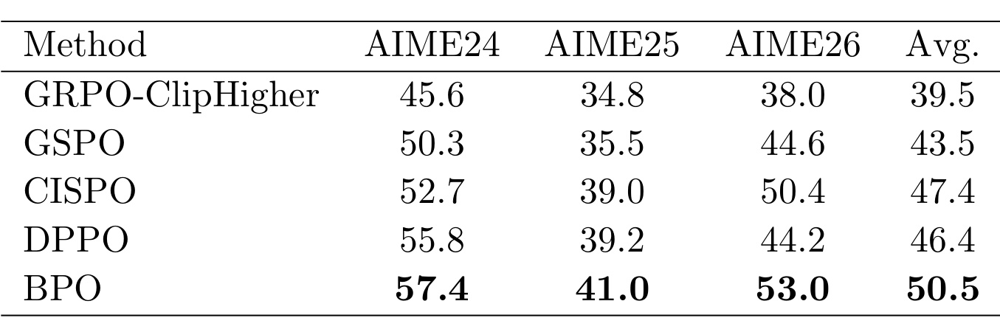
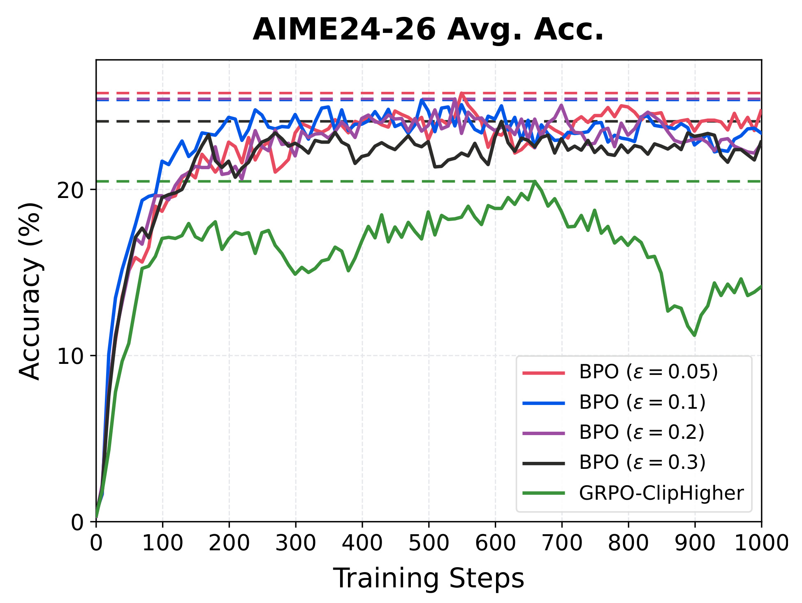
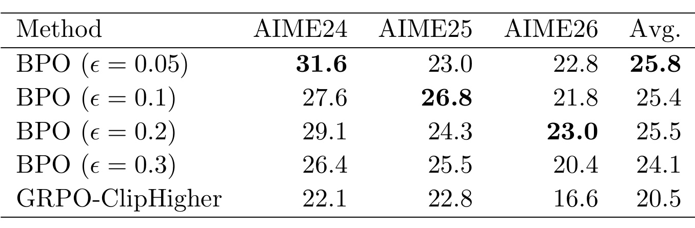
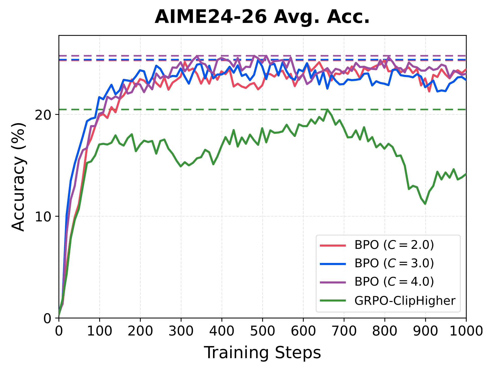
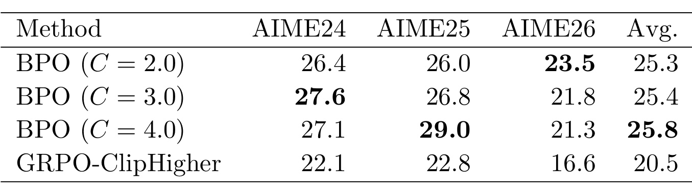

Bellman Policy Optimization：从无 critic 的 PMD 等价目标到补概率比更新
Bellman Policy Optimization（BPO）研究大模型可验证奖励强化学习中的策略更新。作者为 Zhuoqing Song、Haotian Xu、Xikun Zhang、Lidong Bing，一作机构为 Apodex US, Inc.，并署名 Princeton University。论文于 2026 年 9 月 14 日提交，属于未经本笔记独立复现实验的 arXiv 预印本。论文链接：arXiv:2609.15987。本轮未核验到独立代码或项目入口。
将策略镜像下降直接用于语言生成，需要估计生成过程各个中间状态的价值；训练额外的价值模型既增加内存与计算开销，其估计在推理任务上又可能不准确。论文希望在不训练价值模型的情况下，恢复相同的策略更新目标。
1. 背景和问题
1.1 从答案奖励走到逐词更新，缺失的是什么
数学推理的可验证奖励训练具有一种很特殊的信息结构：模型逐个生成词元，奖励却往往要等整段回答结束后才能给出。验证器能判断最终答案是否符合题目答案，但未必能指出中间哪一步推导有益，哪一步开始偏离正确路径。一个很长的响应可能包含正确的前置推理、不必要的重复、自我纠错，以及最后一个错误的数值。终局奖励将这些不同贡献压缩成一个结果。若训练系统想按每个生成位置的实际价值精细更新，就需要知道“走到这个前缀后，继续生成最终能拿到多少奖励”，这个条件期望就是价值函数。难点不在奖励能否拿到，而在如何将已拿到的终局信息用于策略优化，同时控制估计和训练成本。
语言模型的状态可以直接写成“题目加已有回答前缀”，动作就是下一个词元。确定一个动作以后，下一个状态只是把它拼接上去，因此这里的状态转移是确定性的。随机性来自策略选择什么词元，最终奖励则由验证器对完整响应计算。这种结构比一般机器人控制环境简单，却有极大的动作词表和极长的轨迹。模型可能要生成上万词元才结束，逐状态运行条件续写来估计价值会消耗大量采样；训练一个单独的 critic 又需要模型参数、显存、训练数据和稳定的价值回归。论文正是利用确定性拼接与纯终局奖励这两个条件，把表面上需要遍历中间价值的问题改写成整条响应上的约束。
GRPO 选择了一条很实用的路径：针对同一个题目采样一组回答，用组内奖励均值作为基线，再除以组内奖励标准差。比组均值好的回答得到正优势，比组均值差的得到负优势。同一条回答中的全部词元共享这个优势，所以它避开了中间状态价值网络。然而，这并不意味着它已经恢复了每个词元的真实优势。共享组优势是一种训练构造，优势如何与当前策略概率、采样策略概率和裁剪规则相乘，依然会显著影响优化行为。因而 BPO 的研究目标并不是另造一个数学答案验证器，也不是提出一种新的推理提示词，而是重新审视这个策略梯度更新环节的理论来源与实际权重。
1.2 为什么从镜像下降出发
策略镜像下降把一次策略改进拆成两股力量：提高高价值动作的概率，同时用分布散度约束新策略与旧策略之间的变化。如果只有第一股力量，单次更新可能过度追逐当前估计最好的动作；如果只强调第二股力量，策略又难以离开原有分布。镜像下降用一个明确的优化问题表达这种平衡，具有可解析的指数加权最优解。在论文的写法中，旧策略是生成训练响应的 rollout policy，记作 μ，新策略是待优化的 π。用旧策略的动作优势作为改进信号，可以避免状态自身的价值平移影响动作排序。它提供的是一个清晰的参照更新，而不是一开始就从工程裁剪公式倒推理由。
真正的障碍是参照问题虽然漂亮，却显式依赖每个前缀下的动作优势。终局奖励只给整段响应一个分数，若仍为每个前缀训练 critic，就失去了 GRPO 路线最吸引人的简洁性。BPO 的贡献首先发生在这一层：借助 Bellman 方程，沿着一条轨迹把相邻状态价值的差加起来，所有中间项相互抵消，只留下最后的奖励与最初题目的价值。最初题目的价值就是对同一题目反复采样后的平均奖励，天然可以借助已有的组采样估计。由此，论文把“每个位置都有未知价值”转成“每道题需要一个初始期望”。这个转化是否仍保留原始最优策略，才是理论部分需要证明的实质。
此外，rollout 策略和当前策略通常不是同一个数值对象。生成一批回答后，训练会在这批固定回答上执行多次更新，因此后面的更新已经相对生成时的策略有所偏移。生成引擎与训练引擎也可能存在数值差异。GRPO 常用选中词元当前概率与采样概率的比值处理这个关系；BPO 最终使用的则是“其他所有词元合计概率”的比值。它关注的仍然是同一词元，却以补概率的变化描述偏移。这个替换看起来只有一行，但涉及从轨迹残差到局部梯度、从完整词表 KL 到二元 KL 的连续近似，不能把它概括为凭经验选择了一个不同的重要性采样比。
1.3 读这篇论文时必须分开的三层结论
第一层是精确优化对象的等价性：在论文规定的策略空间、支持集、有限响应长度和正权重条件下，轨迹残差平方目标与优势版 PMD 有相同的最优完成分布。第二层是便于大模型训练的近似实现：它保留旧策略采样，在当前参数上计算词元对数概率，并通过平滑、停止梯度和裁剪获得稳定的局部更新。这两层之间不是直接代入关系。第三层是实验观察：在固定模型、固定数学数据、固定训练预算下，这个实践损失优于所比较的几种损失。实验没有证明近似损失在任意参数化网络上仍有原始定理中的唯一最优解，也没有证明每个后训练任务都会获得同等收益。
这种分层对推荐与大模型交叉研究也有启发，但适用范围必须准确。BPO 直接研究的是自回归大模型的终局奖励训练，不是点击率排序或连续时间的用户价值预测。若把推荐结果编码成一串离散词元，并由末端可验证指标打分，某些数学结构可能相似；如果环境在每一步都有外部随机反馈，或者需要处理即时多步奖励，就不能直接照搬这里的望远镜求和形式。对当前读者最实际的价值，是理解训练系统中的采样分布、更新分布与概率权重应当怎样对应，以及知道一个没有显式 critic 的损失仍可以有清晰的动态规划出发点。论文不包含方法框架图，本章因此只解释问题条件，不用实验曲线冒充机制示意。
2. 方法
2.1 Advantage-Based PMD 与 Bellman 轨迹等价
先固定一个 rollout 策略 μ，设题目为 x，回答为 y，位置 t 的状态为 $s_t=(x,y_{<t})$。论文原式（1）要最大化策略生成完整回答的期望终局奖励；原式（16）则描述从固定 μ 出发的一次镜像下降更新。以下把这两个层次并列，避免把单次更新目标误当作完整训练收敛结论。
符号解释：D 是题目分布，$P_\pi$ 是完整响应分布，R 是有界终局奖励，$A^\mu$ 是 μ 下的动作优势，η 为正步长。镜像下降此处的惩罚方向是当前策略相对旧策略，即 $D_{\mathrm{KL}}(\pi\Vert\mu)$。最优解给旧概率乘上优势的指数，再归一化。因为优势在 μ 下的动作期望为零，对最优解的对数形式取 μ 期望，可以将未知配分函数改写为方向相反的 KL。这不是笔误，正是后续推导的重要桥梁。
符号解释：$\pi^+$ 是单次 PMD 的最优策略，$Z_\mu$ 是归一化常数。对于纯终局奖励及确定性拼接，动作价值等于下一状态价值，因此动作优势就是前后状态价值之差。沿整段回答累加，中间前缀的价值完全抵消。下面的等式对应原式（23），它使用真实的 μ 价值，不是给每个词元直接赋相同组优势。
符号解释：$V^\mu(s)$ 是从状态 s 用 μ 继续生成的期望奖励；$V^\mu(x)$ 为题目初始价值；终止状态价值等于已知奖励。把最优解的对数关系也沿轨迹求和，便得到整段响应的残差 δ。将它平方取期望，就是原式（18）与（19）的无 critic 优化问题。这里仍然包含逐状态的完整反向 KL，却不再包含中间状态价值函数，省去价值估计不等于已经省去完整词表分布计算。
符号解释：$\phi(x)>0$ 为题目权重，优化限制在相对 μ 绝对连续的策略集合。原定理不只是证明 PMD 解让残差为零，还证明任何最优解都必须在 μ 可达状态上与之相同。附录利用每个词元残差在 μ 下条件均值为零，构造有限时域鞅；若最优目标为零，终点残差几乎处处为零，鞅的所有部分和也为零，于是每个可达状态动作上的残差为零。最后用概率归一化消除状态常数，得到相同的完成分布。这一必要性论证排除了不同前缀残差偶然正负抵消的担忧，但不对 μ 永远不可达的状态作唯一性承诺，也没有解决神经网络参数共享带来的表示与优化限制。
2.2 Practical Approximation：残差线性化与二元 KL
精确残差的梯度含有当前整段响应的 δ，直接计算和优化仍很复杂。论文先围绕 $\pi=\mu$ 时的残差做局部线性化，把梯度中 $\delta/\eta$ 替换为 $R-V^\mu(x)$。接着利用同题目 G 个独立采样回答的奖励均值估计初始价值，并将题目权重取为奖励标准差的倒数，使用经验标准差代替。于是得到与 GRPO 相同的组归一化优势。均值对初始价值的无偏性，不意味着整个经验标准化梯度无偏：同一组数据还参与随机分母估计与每条回答自身的中心化，原文没有给出这些替代的全局误差界。
符号解释：$R_i$ 是第 i 条回答的终局奖励，G 是组大小，梯度只对当前策略参数求导，μ 固定。这是原式（25）到（26）的近似链。标准差为零的组不能直接除，论文展示的数学定义没有展开这个极端情形的具体代码分支；复现必须确认实际框架的过滤或数值保护，不能在没有代码核验的情况下声称某一种处理已经采用。共享组优势保留了响应级监督，因此 BPO 并未重新训练一个能够逐词输出独立信用分配分数的 critic。
下一步把“选中的词元”看作一类，其余所有词元合成另一类。设选中词元在 π 与 μ 下的概率分别为 p 与 q，原先完整词表的反向 KL 用这两个伯努利分布的 KL 替代。合并类别后的 KL 是完整 KL 的下界，但一般不是等于完整 KL；其余词元之间怎样重新分配概率的信息会丢失。这个近似使梯度只需用 p、q，而无需显式保留每个位置完整词表的旧分布来计算 KL。注意这里写的是推导中实际使用的 $\mu\Vert\pi$ 方向，与预备知识展示的正向二元形式应按参数顺序区分。
符号解释：$p=\pi(y|s)$，$q=\mu(y|s)$。原式（27）的右侧是精确微分恒等式，但它精确的是“替换成二元 KL 之后的局部表达”，不能反过来证明前面的替换精确。直接求导时，二元 KL 贡献 $-q\nabla\log p+(1-q)\nabla p/(1-p)$，再加上 $\nabla\log p$，并使用 $\nabla p=p\nabla\log p$，就会化简成补概率比。因而这个比值不是普通的 $p/q$ 重要性比，它的分子与分母都对应“没有选择该词元”的剩余质量。当两策略相同，权重等于一；当当前选中概率接近一，而旧策略没有那么确定，分母会很小，必须额外稳定化。
2.3 BPO Loss：补概率比、stop-gradient 与双重裁剪
实践版本往分子、分母同时加平滑常数 ε，再加权重上限 C 和依优势符号决定的掩码。原式（14）与（15）可以写成下面两组公式。平滑保持 $p=q$ 时权重为一，也限制了分母接近零造成的放大；停止梯度确保实现得到前一节推导的加权对数概率梯度，不会再对 ω 求导产生额外项。它不是单纯为了节省计算而加的装饰。
符号解释：$\omega_{i,t}$ 是第 i 条回答第 t 个词元的平滑补概率比，sg 固定其数值而阻断反向求导，C 为系数上限；$M_{i,t}$ 控制当前词元是否继续接受该优势方向的更新，其具体定义如下。
符号解释：sg 表示 stop-gradient；ε 为补概率平滑量，$\epsilon_{\mathrm{high}}$ 与 $\epsilon_{\mathrm{low}}$ 为不同的裁剪阈值，不应混为同一超参数。C 是权重上限，而 M 是方向敏感的零一掩码。正优势且概率已朝奖励方向变化太多时停止继续强化；负优势且变化已朝降低该回答概率的方向越过界限时停止继续惩罚。掩码判断用 ω，不是用原 GRPO 的 p/q；上限截断则限制尚未被掩掉的梯度系数，二者不能合并成一句“把权重裁到某个区间”。主实验采用 ε 为零点一、C 为三，不能由此直接推出所有裁剪阈值也等于零点一。
比较两个简单数值有助于看清它与重要性比的差异：若旧概率零点零一变成当前零点零二，p/q 翻倍，但带零点一平滑的补概率比只约为一点零零九；若旧概率零点八变成当前零点九，补概率比则是一点五。前者对低概率词元的相对翻倍不激进放大，后者对已高置信词元的剩余质量缩减更敏感。这只是公式行为演示，不是论文给出的独立实验。最终损失还按序列内词元均值、再按序列均值聚合，避免把原式的逐词贡献误读为直接对全部词元无归一化求和。整套流程在训练期改变更新，推理时仍是原来的自回归模型，不增添价值网络或额外推理模块。
3. 实验结果
3.1 先固定训练与评测口径
主实验使用 Qwen3-30B-A3B-Base，在 DAPO-Math-17k 的英文子集上训练。每个 rollout batch 包含二百五十六道题，每题生成十六条回答，共四千零九十六条响应；随后拆为八个每组五百一十二条响应的 minibatch。论文图上的一次 training step 是一批采样加八次优化器更新。因此四百步不是四百次反向更新，而是三千二百次优化器更新；若复现时只执行四百次更新，预算就少了八倍，比较将失去意义。最长响应为一万六千三百八十四个词元，各方法都使用 rollout-router replay，以减少混合专家路由在生成与训练间的不一致。控制变量实验改变策略损失，其他设置保持一致。
附录 B 给出共同优化条件：AdamW 固定学习率十的负六次方，两个动量系数为零点九与零点九八，权重衰减零点一，梯度范数裁剪阈值一。没有额外的 KL penalty，熵奖励系数为零。这与推导里出现 KL 并不矛盾：KL 是推导产生补概率权重的来源，不是说实践损失另加了一个固定参考模型的 KL 正则。训练与评测解码均用温度一、top-p 一，关闭 top-k 过滤，评测长度上限与各模型训练上限一致。损失聚合采用 seq-mean-token-mean。每十个 rollout batch 评测一次，所以最佳检查点是在离散网格中选择的，而非连续观察所有优化器更新得到的最优瞬间。
AIME24、AIME25、AIME26 的评测每题生成三十二条回答，先把三十二个正确性指示取平均，再对题目平均，最后对三个年度分数做算术平均。这个 Avg@32 是对单次采样成功概率 Pass@1 的估计，不是只要三十二条里有一条正确就算成功的 Pass@32，也不是多数投票准确率。更重要的是，表格每行先选择该方法跨三个年度平均分最高的同一个检查点，再报告三个年度分数，不能把各年度分别挑出的最优值拼成一行。出现并列时取更早检查点，这个选择规则能复现表内口径，却不能代替独立验证集或多种子统计。
3.2 主训练曲线和主表分别回答什么
先看训练全程，才能知道后面的峰值是否掩盖末期行为。以下是原文 Figure 1，横轴为 rollout 训练步，纵轴为三个年度 Avg@32 的平均百分比。

蓝色 BPO 在约两百步以后大体位于高分区域，并在训练后段继续提升，虚线标出它的峰值平均准确率百分之五十点五。图中可以看出，各方法不是严格单调上升，CISPO 中期表现很强，DPPO 后期仍在上升，GRPO-ClipHigher 则有较明显的后段回落。因此“BPO 领先”应理解为指定检查点选择与终点比较下的结论，不宜写成每一训练步都领先所有方法。论文明确给出四百步终点的 BPO 为百分之四十九点四，终点最强基线为 DPPO 的百分之四十五点五，差三点九个百分点。这个终点参照与主表的最强峰值参照 CISPO 不同，若混用就会制造错误增益。
曲线还说明，应当分开比较样本进度和墙钟速度。相同横轴位置表示生成过相同数量的 rollout batch，在本设置下也对应相同次数的优化器更新，但不表示花费了完全相同的秒数。图中没有吞吐率、GPU 小时或端到端时长，因而不能从上升更快推断训练成本按相同比例下降。对于长响应和混合专家模型，生成长度、路由重放及损失计算的开销都可能影响实际时间。原文提供的是受控训练过程的准确率证据，支持 BPO 在这个预算中取得更好的成绩；它并未独立量化移除完整 KL 或避免 critic 带来的系统级节省，也没有通过多个随机种子的置信区间判断相邻点的小幅波动。
图中连接线还需按评测频率理解：作者每十个 rollout batch 才重新采样评测，线段之间并没有逐步测量值。曲线上的短暂交叉可能同时受到训练变化和三十二次采样估计误差影响，不能据连接线精确判断领先首次发生在哪一次优化器更新。横向比较宜保留原评测间隔，避免把插值走势当成新增实验事实。
再看精确峰值数值。原文 Table 1 的每一行都是该方法自身跨年度平均准确率最佳的检查点，列顺序保留 AIME24、AIME25、AIME26 与 Avg.。

BPO 的三个年度分数为百分之五十七点四、四十一点零、五十三点零，平均五十点五，三个年度列都达到表中最高。GRPO-ClipHigher 的均值为三十九点五，GSPO 为四十三点五，CISPO 为四十七点四，DPPO 为四十六点四。因此 BPO 对四者的均值提升依次为十一点零、七点零、三点一、四点一个百分点。这里必须使用“百分点”，不能把五十点五减四十七点四的差直接写成相对提升百分之三点一。若确需相对变化，则是用差除以基线重新计算，但论文主要口径是百分点，本笔记沿用它，避免给读者造成夸大的效果印象。
逐年度看，BPO 相对 CISPO 在 AIME24、AIME25、AIME26 上分别高四点七、二点零、二点六个百分点；相对 DPPO 则分别高一点六、一点八、八点八个百分点。最后一组说明，平均分优势并非每个年度贡献相同，也说明 DPPO 的主表优势与终点优势不能混为一谈。这里的跨年度一致领先比只报告平均数更有说服力，但仍只有一个模型架构与一套数学训练数据，不能据此断言代码、通用指令遵循、多模态或真实工具调用都有同等改进。三个年度题目是相关任务分布，并不等于三个独立应用领域。
主表没有单独报告各个损失的多随机种子方差、显著性检验或额外超参数搜索预算；各基线采用文献中选取的配置，包括 GRPO-ClipHigher 的非对称区间、CISPO 的重要性权重上限、DPPO 的二元总变差阈值与 GSPO 的序列级窄裁剪区间。所有方法其余条件相同，增强了损失对照的可解释性，但“所用配置中的最佳”仍不能扩大为“对所有可能调优后的基线都最优”。表内结果最稳妥的结论是：BPO 在作者给定的公平共享训练设置和检查点规则下，取得了更高的数学单次采样准确率估计。
3.3 平滑系数：总体稳定不等于逐年度不变
附录的超参数实验改用 Qwen3-4B-Base，而非主实验混合专家大模型。训练一千个 rollout step，每批一百二十八道题、每题十六条回答，总二千零四十八条响应拆成四个五百一十二条的 minibatch；最长响应八千一百九十二词元。固定 C 为三，逐次改变 ε，得到下面的 Figure 2。它与主实验图的模型、长度上限、每步更新数和总步数都不同，图上数值不应直接与主表相减来估算缩放损失。

四条 BPO 曲线分别对应零点零五、零点一、零点二、零点三的平滑量，基线仍是 GRPO-ClipHigher。总体上 BPO 曲线在早期上升后维持在二十余百分点，而基线后期出现显著下降；虚线表示各条曲线的峰值，并非终点，也不是运行均值。图中较小的三种平滑量走势接近，零点三的表现稍弱，说明在这组候选值里并不需要精确踩中一个极窄的点才获得增益。这为默认零点一提供了合理支持，但看不到 ε 接近零、显著大于零点三或特殊概率极端情形的系统测试，因此不能将观察扩展为对任意平滑量都不敏感。
把曲线与公式联系起来，ε 变大时，分子分母中的共同常数更占主导，补概率差异产生的权重偏移被压缩，更新更接近普通的组优势加权对数概率梯度。这给“较大平滑可能减弱矫正信号”提供了机制层面的解释，但图中只改变一个超参数，未直接画出 token 概率、权重分布、被掩码比例或梯度方差，因此它不能证明性能变化一定由某一种词元群体造成。图上还显示多个 BPO 设置之间的曲线相互交叉，足以提醒复现者不要从肉眼某一小段的领先决定超参数。原文采用的仍是跨年度平均最佳检查点标准，具体各年度变化要继续看 Table 2。
从权重范围也能理解这组消融的覆盖边界：在概率合法且平滑量为正时，分母至少为平滑量，未经上限限制的权重不会像零平滑时那样无界。平滑越强，最大可能放大倍数越小；不过本实验还固定了权重上限为三，所以部分极端差异可能已经被上限控制。图中的性能接近只能证明组合配方在所测设置下接近，不能单独量化平滑自身承担了多少稳定作用。若记录权重上限触发频率，就能更直接地区分这两种保护机制。

Table 2 显示，ε 为零点零五、零点一、零点二时，最佳均值分别是百分之二十五点八、二十五点四、二十五点五；在这三个点之间最大差距只有零点四个百分点。ε 为零点三时均值为二十四点一，仍高于基线二十点五，但相对最优设置降低一点七个百分点。这个结果支持一个有限范围内的稳健性判断：论文所测较小平滑量都有效，并且默认值附近没有陡峭崩溃；它不支持“ε 完全无关紧要”。由于没有多次运行方差，零点一与零点二之间零点一个百分点的差异尤其不适合被解释为可靠排序。
分年度结果揭示了平均数隐藏的取舍。零点零五在 AIME24 达到三十一点六，是这一列最好；零点一在 AIME25 达到二十六点八；零点二在 AIME26 达到二十三点零。不存在一个 ε 在所有年度上同时占优。默认零点一因此可以理解为处于表现接近的稳定区间，而不是因为它在全部基准上最佳。把默认值套到主实验大模型时，实际上还带有从小模型经验出发的选择，论文没有列出大模型上的完整扫描。复现者若使用不同答案分布、不同组大小或更长响应，需要重新观察极端概率、掩码率与实际准确率，不能仅凭这张小模型表宣称默认超参数已经被跨尺度充分验证。
这一组实验还有一个结构性局限：它固定了 C，所以测的是给定上限条件下平滑量的影响。ε 会改变未经上限限制的 ω 分布，而 C 又会截掉一部分大权重，二者存在可能的交互。单因素扫描便于定位现象，却没有证明两个参数的二维组合都稳定。要更有力地检验推导中的每个近似，还应比较不用平滑、不同 KL 近似以及保留更完整残差信息的版本；当前表格并未包含这些对照，因此实验主要验证实践配方的可用性，而不是逐步证实每一次理论近似的必要性。
3.4 截断上限：有限区间内的变化很小
第二组扫描固定 ε 为零点一，比较 C 等于二、三、四，其他设置与上一组小模型实验相同。下面 Figure 3 的基线与上一组共享，不能把两个图里的同一条基线当成重复独立试验。

三个 BPO 上限设置的曲线长期维持在相近准确率区域，与基线后段的明显回落形成对照。在该训练轨迹中，C 的取值从二改到四，并未导致像改变整个损失家族那样大的差异。虚线之间距离很小，说明峰值均值很接近；但曲线仍有交叉和波动，不能据此排序每个时刻的更新质量。横轴一千步对应每步四次 minibatch 更新，进一步强调这种稳健性结论来自较长的小模型训练，而不是把主实验四百步换个刻度重复绘制。作者将它作为实践参数敏感性证据是合理的，然而没有显示多次独立运行带状区间。
从损失结构看，C 只约束未被掩码清零的权重系数，并不直接决定正负优势的裁剪边界。即使 C 取大，某些越界的正优势词元仍然会被 M 清零；反之，一个未被 M 清零的高权重词元可能受到 C 的保护。因此“上限变化小所以裁剪不重要”并不是有效推论。曲线中缺少被 C 截断的词元比例，也缺少按优势符号拆分的权重统计，无法判断二到四变化小是因为很少触发上限、被其他机制抵消，还是确实存在宽稳健区。笔记把这些作为尚待核验的机制问题，不将猜测写成论文结论。
还需要注意，后期准确率平稳只是外部任务分数的表现，不等于参数更新幅度、策略熵或每个词元的梯度都平稳。两个损失可以获得接近的平均准确率，却通过不同的响应长度和概率集中程度实现。原文没有这些过程指标，因此图中三条曲线接近应作为结果层面的观察，不应用来宣布优化动力学相同。尤其是高置信词元更容易触发补概率权重放大，按置信度分组观察被截断样本，才有机会判断上限是否主要保护少数特殊词元。

Table 3 中 C 为二、三、四时，最佳均值分别为百分之二十五点三、二十五点四、二十五点八，最大差距零点五个百分点，均超过 GRPO-ClipHigher 的二十点五。这给“在二到四的已测区间内不敏感”提供了直接数值依据。默认 C 为三不是本表均值最高的取值，但位于近似平坦区域。两个扫描共有的默认设置产生相同的二十七点六、二十六点八、二十一点八和二十五点四，这是同一配置的重复展示，不能把它当作两个独立种子成功复现默认结果的证据。这样区分可以避免把表格数量误当成证据独立性。
逐年度观察，C 为二在 AIME26 达到二十三点五，C 为三在 AIME24 达到二十七点六，C 为四在 AIME25 达到二十九点零，最好的年度配置再次不统一。由此可见，平均提升很小不等于各年度分数都保持不变，均值可以遮盖年度间的增减抵消。实验没有测不设上限的情况，所以不能判断 C 保护在极端权重下是否不可或缺，也不能证明更大范围的 C 都安全。若未来想用它指导线上训练，应同时记录最大梯度、权重分位数、NaN 或溢出事件和最终任务性能；这些是基于公式推得的复现观察建议，本论文没有提供相应结果。
综合主表和两组消融，最有力的证据是共享设置下主模型对四种基线的领先，以及默认附近两种稳定化参数对小模型成绩影响有限。证据较弱的部分是跨任务泛化、超参数交互、不同种子的稳定性和真实系统成本。论文也没有提供线上 A/B、工具任务或推荐业务指标。将结果用于研究选题时，可以据此把补概率比损失列为值得受控复现的候选；将结果用于生产决策时，则仍需要本地训练栈与目标数据上的独立验证。
4. 总结
4.1 我认为最值得保留的技术理解
BPO 最值得记住的地方，是它把“没有 critic”与“有动态规划来源”连接起来。终局奖励和确定性词元拼接使价值差可以沿轨迹消去，PMD 的指数最优解又让配分函数化成反向 KL。两者结合，产生了一个只需初始价值和终局奖励的精确轨迹目标。它不是说每个词元真实贡献相同，而是说可以用整条路径的约束恢复原本逐状态的最优策略。附录的鞅论证是这件事的关键保障：不能仅靠看到望远镜求和就认为反向等价自然成立，必要性证明才排除了不同位置残差彼此抵消产生额外解的可能。
实践端最值得保留的记忆是补概率比的来源。选中概率与剩余概率被压成二元分布之后，对“对数策略概率加反向二元 KL”求梯度，恰好产生剩余质量的比值。这个结果解释了为什么权重不同于传统 p/q，也解释了为何实现必须停止该权重的梯度。若只复制一行新权重却忘记 stop-gradient，得到的已经不是论文写出的梯度；若把掩码判断继续留在旧重要性比上，也改变了损失定义。公式短小并不意味着替换无需核对训练框架，真正要一致的是概率来源、固定 μ、优势计算、掩码条件和聚合方式的完整组合。
4.2 证据边界与复现优先级
我对实验证据的判断是积极但有限：主模型最佳均值五十点五与最强基线四十七点四的差距值得关注，终点对比也没有完全依赖挑选峰值；小模型两个参数扫描显示配方不是只在一个极窄设置下成立。但三个年度都属于 AIME 数学任务，且没有多种子不确定性、独立任务泛化或系统成本表。不能把理论中的唯一最优解扩写为实践训练的全局最优保证，也不能把较少显式统计量推导为已经测得的吞吐提升。论文称 critic-free 是算法结构事实，成本究竟节省多少仍需与具体训练实现比较。
若安排一次复现，我会先核对训练步定义与 Avg@32 统计。前者决定实际执行的是四百次还是三千二百次参数更新，后者决定评测的是单次采样概率还是多次尝试成功率；这两处出错，会比很小的超参数差异更严重地扭曲结论。其次对同一批 rollout 保存的 μ 概率与更新时 π 概率做一致性检查，验证相等时 ω 恰好为一，检查正负优势两种越界情形是否正确清零，并确定全同奖励组如何处理。再记录不同概率区间的权重与掩码比例，检验理论直觉是否反映在实际词元群体上。最后才扩展跨种子、跨模型或跨任务比较，而不是从最高分反推机制已经被证实。
这篇论文也提醒读者认真看清“无价值模型”的代价转移。它用组采样估计初始期望，依然需要每题多条长回答；它不需要额外 critic，却仍受奖励稀疏、组内没有差异以及旧数据重复更新的限制。采样支持之外的行为没有被精确定理约束，网络共享参数也可能让多个题目相互影响。这些限制并不否定方法，而是给它划出准确的位置：BPO 是一种有清晰理论起点、经过多步近似形成、在指定数学推理设置上有效的策略损失候选。后续价值取决于近似误差、系统行为与任务泛化的进一步核验，而不是仅凭漂亮的等价定理把整个工程训练过程视作已被证明。